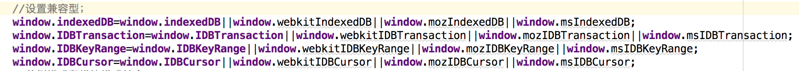
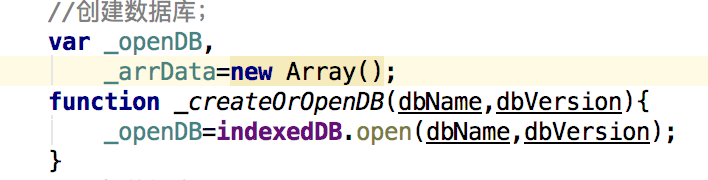
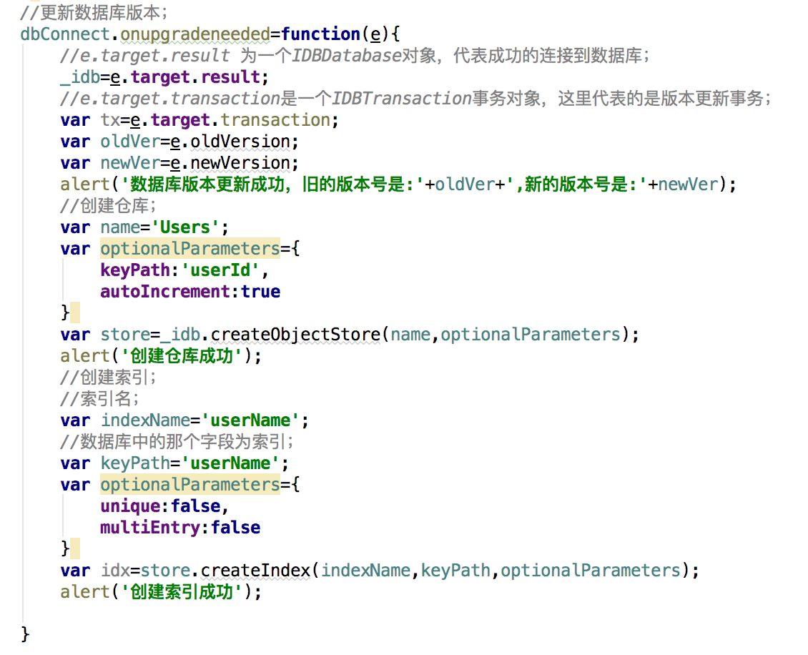
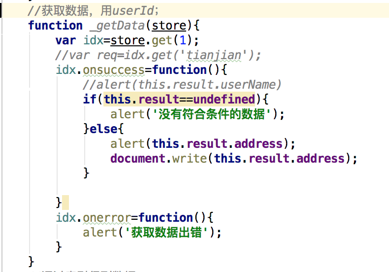
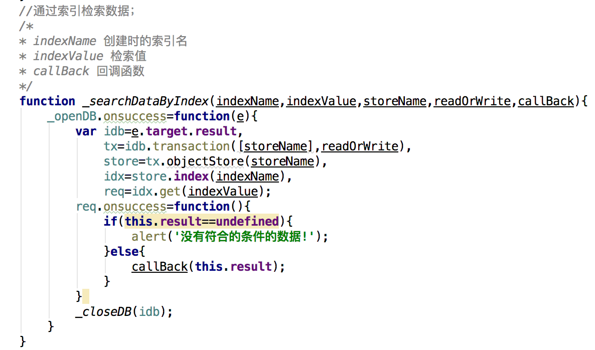
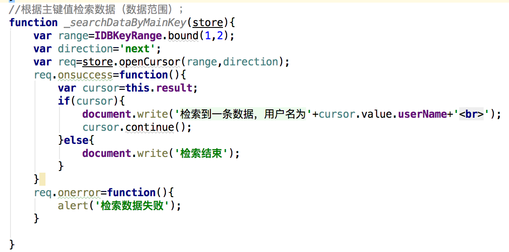
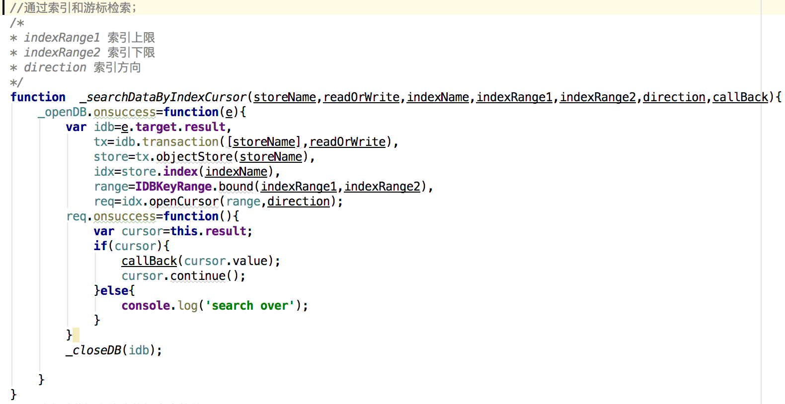
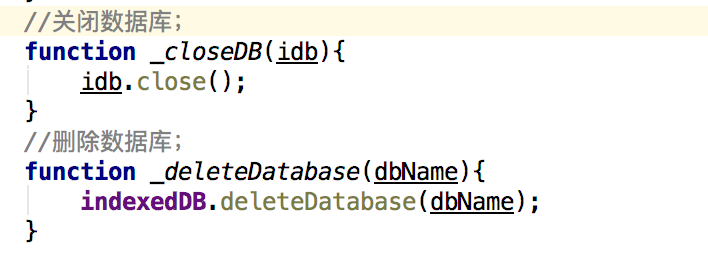

IndexedDB 说明
IndexedDB是HTML5-WebStorage的重要一环，是一种轻量级NOSQL数据库;一个网站可能有一个或多个 IndexedDB 数据库，
每个数据库必须具有惟一的名称。一个数据库可包含一个或多个对象存储。一个对象存储（由一个名称惟一标识）是一个记录集合。
每个记录有一个键 和一个值。该值是一个对象，可拥有一个或多个属性。键可能基于某个键生成器，从一个键路径衍生出来，或者是显式设置。
一个键生成器自动生成惟一的连续正整数。键路径定义了键值的路径。它可以是单个 JavaScript 标识符或多个由句点分隔的标识符。
设置兼容性

创建数据库以及打开数据库代码
参数一：数据库名。
参数二：数据库版本，一般用于更新数据库，可以触发更新数据库事件。






